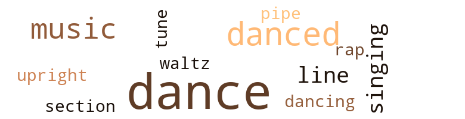
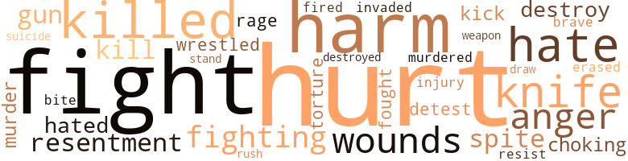

Veil of Nancy (The), by Jackson, Emma Lou (1970)
36 music-related terms matched in this text.
Most frequent terms in this topic: dance (13); danced (5); music (4); dances (3); singing (2)
dance.n.01
Definition: an artistic form of nonverbal communication
| word | sentence |
|---|---|
| dance | And why did he leave so suddenly after one dance ? |
| dance | George replied sharply , " That guy , who met you at the dance and you pretended not to know him . " |
| dance | " I asked him what was his motive coming in taking one dance with you then walking out . |
| dance | If a person wants to go in a dance hall and have one dance and leave that 's his business . |
| dance | Remember our one dance ? |
| dance | He asked Nancy for a dance . |
| dance | He excused himself and left the dance . |
| dance | Nancy laughed , " The dance did n't change anything Pete , the weekend you are welcome to stay . " |
| dances | " You are right , " said Jerry , " but as long as I hold the string , she dances by my music . " |
| dances | " I love country dances , " said Nancy , " and the people as well . " |
| dances | After the first night it seemed easier for Nancy ; it was movies , dances , long rides , then the stay home parties . |
| dance | George stuttered as if he were choosing which he would rather do : give up his radio program or go to the dance . |
| dance | While she was trying to calm herself , a familiar voice spoke , " May I have this dance . " |
dance.v.03
Definition: skip, leap, or move up and down or sideways
| word | sentence |
|---|---|
| danced | " I danced with you when this girl was a baby and you have n't changed . |
| dance | Helen spoke hastily , " That 's the first time he ever asked you to dance , is n't it ? " |
| danced | She danced with Pete . |
| danced | Along toward the end Jerry danced Nancy across the room and out the door where they could have a few minutes to themselves . |
| danced | Helen danced with Joe once , then left him with Nancy as usual , while she chatted among friends . |
| danced | Then suddenly Joe had something to say about who she danced with , or even talked with . |
| dance | He went as far as to tell one man that Nancy did n't want to dance with him . |
| dance | Joe quickly said , " She does n't dance unless I say so . " |
| dancing | Once she got started to dancing the bad feeling disappeared . |
music.n.01
Definition: an artistic form of auditory communication incorporating instrumental or vocal tones in a structured and continuous manner
| word | sentence |
|---|---|
| music | When the music had stopped before removing his arms he asked , " Do you like dancing ? " |
| music | And their voices were like music . |
| music | Even though the words were barely heard throughout service the soft music like sound stayed with Nancy . |
| music | " You are right , " said Jerry , " but as long as I hold the string , she dances by my music . " |
pipe.n.04
Definition: a tubular wind instrument
| word | sentence |
|---|---|
| pipe | George refilled his pipe and went to check on Ann . |
rap.n.05
Definition: genre of African-American music of the 1980s and 1990s in which rhyming lyrics are chanted to a musical accompaniment; several forms of rap have emerged
| word | sentence |
|---|---|
| rap | A hard rap came on the door . |
section.n.01
Definition: a self-contained part of a larger composition (written or musical)
| word | sentence |
|---|---|
| section | Nancy was convinced that none of her former friends ever traveled through this section . |
singing.n.01
Definition: the act of singing vocal music
| word | sentence |
|---|---|
| singing | She recalled the times while singing , Jesus keep me near the cross . |
| singing | Later on in the day Nancy 's mind was at ease when she heard the singing of a bird . |
tune.n.01
Definition: a succession of notes forming a distinctive sequence
| word | sentence |
|---|---|
| lines | Nancy opened it just enough to see the top lines , then handed it back to him . |
| tune | Nancy pictured a broad smile on that ugly face as she hummed a tune while searching to bring more destruction , leaving behind nothing but quietness . |
| line | " Not at all , " said Nancy , " but you are getting out of line , and you know I detest downers . |
upright.n.02
Definition: a piano with a vertical sounding board
| word | sentence |
|---|---|
| upright | Jerry sat upright , " I did n't tell you why Leona went to her mother 's . |
waltz.v.01
Definition: dance a waltz
| word | sentence |
|---|---|
| waltz | Pete acted as intelligent as anyone until toward the end when Joe asked Nancy to waltz with him . |
117 violence-related terms matched in this text.
Most frequent terms in this topic: hurt (14); fight (12); harm (11); killed (8); hate (7)
anger.n.01
Definition: a strong emotion; a feeling that is oriented toward some real or supposed grievance
| word | sentence |
|---|---|
| anger | But Nancy 's anger soon faded away and she was back to her jolly self again . |
| anger | Jerry was in a rage of anger . |
| anger | His anger wo n't stop him . |
| anger | Nancy screamed out in anger , " They ca n't take your place . " |
bang.n.04
Definition: the swift release of a store of affective force
| word | sentence |
|---|---|
| rush | She did n't rush ; all hopes were about gone . |
destroy.v.04
Definition: put (an animal) to death
| word | sentence |
|---|---|
| destroy | It seemed that he wanted to protect the man who had tried to destroy him . |
| destroys | When he can no longer destroy , then Satan destroys him . |
| destroyed | Knowing that Leona destroyed herself over another man , is enough to drive him insane . |
draw.v.23
Definition: pull (a person) apart with four horses tied to his extremities, so as to execute him
| word | sentence |
|---|---|
| draw | Would they think of her as some sort of quack trying to draw attention ? |
erase.v.01
Definition: remove from memory or existence
| word | sentence |
|---|---|
| erased | Monday morning a few minutes together quickly erased the memories of a forbidden weekend with Nancy . |
fight.n.05
Definition: a boxing or wrestling match
| word | sentence |
|---|---|
| fight | When upstairs and out of Pete 's hearing she asked , " Did you have a fight with Pete ? " |
| fight | Pete had given up his fight . |
| fight | " She told me about the child , " said Joe , " but if I did n't want a fight on hand I better not ask about her past . " |
| fight | Did Joe start that fight intentionally ? |
| fight | On several occasions he mentioned something concerning the fight . |
| fight | Nancy and Jerry had a fight over Joe . |
fight.v.02
Definition: fight against or resist strongly
| word | sentence |
|---|---|
| fight | Nancy could no longer fight off the craving misery that was tearing her apart . |
| fighting | Long past midnight she was still fighting with her conscience . |
| fighting | Nancy could see there was no life fighting to live in her mother . |
| fight | Jerry was working in an awful strain as though he was trying to fight off whatever it was . |
| fought | A few feet away Pete fought desperately to free himself . |
| fights | " But what if he fights against it ? " |
| fight | or maybe he 's like I am , would rather fight it out for himself . |
| fight | " Now you know why I am ready to fight . |
| fighting | They kept fighting . |
| fought | I think the way Stan fought to keep free of me and then kept coming back enticed me to love him . |
| fight | He was good company but Nancy would rather fight the lonely nights than arouse his emotions . |
| fighting | Nancy was worn out from fighting off the worst fear she had ever known , and with blistered feet that she could hardly stand on . |
| fight | " I must fight hard for Ann if not for myself . |
fury.n.01
Definition: a feeling of intense anger
| word | sentence |
|---|---|
| rage | Jerry was in a rage of anger . |
| rage | While Jerry was in his rage quickly disappeared . |
gag.v.06
Definition: cause to retch or choke
| word | sentence |
|---|---|
| choking | He turned to say in a choking voice , " I , was thinking of going home tonight . " |
| choking | He kissed Nancy and in a choking voice , he said , " Take care , honey , until we are together again . " |
gun.n.01
Definition: a weapon that discharges a missile at high velocity (especially from a metal tube or barrel)
| word | sentence |
|---|---|
| gun | He screamed , " How nice of you to ask , it would seem more likely to stick a gun in my rib and say , Let 's go . " |
| gun | Someone screamed , " He 's got a gun . " |
| gun | The gun was taken away . |
harm.v.01
Definition: cause or do harm to
| word | sentence |
|---|---|
| harm | Should harm occur it 's evil in disguise . " |
| harm | Why should Joe want to harm me , Nancy thought . |
| harm | I just would n't allow myself to believe Joe would do harm to me . " |
| harm | I just would n't allow myself to believe Joe would do harm to me . " |
| harm | " There is nothing out there that would harm me . " |
hate.v.01
Definition: dislike intensely; feel antipathy or aversion towards
| word | sentence |
|---|---|
| hate | I certainly would hate for him to change back to his old self . |
| hated | Nancy hated for her girls to go out into the world so young . |
| hate | I hate cats . " |
| hated | I hated leaving him to sit by himself . |
| hate | " But I certainly would hate to see you he hurt by falling in love with a married man . " |
| detest | But one thing I detest is a person talking in a round about way , trying to get answers to questions he does n't have courage enough to ask . " |
| hate | " I would hate for more trouble to come . " |
| hate | But looking back before your time , I consider it 's a blessing just knowing you , someone I certainly would hate to lose . " |
| hate | Your folks will hate me . |
| detest | " Not at all , " said Nancy , " but you are getting out of line , and you know I detest downers . |
| hate | " Then you do n't hate me ? " he asked happily . |
hurt.v.04
Definition: cause damage or affect negatively
| word | sentence |
|---|---|
| hurt | You could n't give or expect too much of me , and no one would be hurt . " |
| hurt | " If you will give me a little time I believe we can work out something and on one need be hurt . " |
| hurt | And if Nancy went too far in the wrong direction she could really be hurt . |
injury.n.01
Definition: any physical damage to the body caused by violence or accident or fracture etc.
| word | sentence |
|---|---|
| harm | There is no harm in looking . |
| hurt | When he got hurt ... " Nancy cut short , " You know how I am about the sick . " |
| harm | Nancy smiled , " Love is broad and has many faces , and expresses itself in many ways , " Nancy paused , " Love never caused harm to anyone . |
| injury | Why must I feel obligated as though I was responsible for his injury . |
| harm | After pacing around in the room several times , Jerry settled down and spoke calmly , " Tussy , I did n't bring you here for any harm , to explain my behavior will take time . |
| harm | One evening Ken asked , " Would it be any harm in a goodnight kiss ? " |
| harm | " Maybe I can convince Jerry that I mean no harm , " said Joe . |
| hurt | It wo n't take long for him to get over his hurt feeling and come running home . |
| harm | Perhaps if they could have understood her reason for doing so , they might have accepted it and no harm would have been done . |
invade.v.01
Definition: march aggressively into another's territory by military force for the purposes of conquest and occupation
| word | sentence |
|---|---|
| invaded | " We are about to be invaded . " |
kick_back.v.02
Definition: spring back, as from a forceful thrust
| word | sentence |
|---|---|
| kick | Mona could n't get inside fast enough to kick off her shoes . |
| kick | It read : My darling little girl , I could kick myself for doing this to you and I hope I am not being too hard . |
kill.v.10
Definition: cause the death of, without intention
| word | sentence |
|---|---|
| killed | Dad 's dog killed mother 's kitten . " |
| kill | Nancy , my dad will kill me . " |
| killed | " He was killed in service , " Nancy said , " and I held the world responsible for losing him . |
| killed | Finally he sobbed , " Tussy , Leona killed herself . " |
| killed | " That 's not important now , " said Nancy , " I want to hear how she killed herself . " |
| killed | It 's a miracle that she was n't killed instantly . |
| kill | " You did n't kill Joe ? " |
| kill | If Joe tried to kill her at one time , why would n't he try again . |
| killed | And one of them could have been killed . |
| killed | Finally Nancy began to scream , " I killed him , I killed him . " |
| killed | Finally Nancy began to scream , " I killed him , I killed him . " |
knife.n.02
Definition: a weapon with a handle and blade with a sharp point
| word | sentence |
|---|---|
| knife | What a relief when he placed his knife and fork on the plate . |
| knife | A butcher knife at Nancy 's back he said , " If you do n't go with me , this is where I will leave you . " |
| knife | Joe shoved Nancy in front of him , the knife still at her back . |
| knife | Joe held on to Nancy 's arm with the knife at her back . |
| knife | When he first heard the noise Joe had slipped the knife in his pocket . |
| knife | When he first heard the noise Joe had slipped the knife in his pocket . |
malice.n.01
Definition: feeling a need to see others suffer
| word | sentence |
|---|---|
| spite | Mother saw me in spite of my being careful . |
| spite | In spite of everything the evening went over well . |
| spite | In spite of his being married . |
murder.n.01
Definition: unlawful premeditated killing of a human being by a human being
| word | sentence |
|---|---|
| murder | Frightened as Jerry was it did n't take long for him to lay helpless , perhaps he would have screamed murder , if anyone had been close . |
| murder | Did he really intend to murder me ? |
murder.v.01
Definition: kill intentionally and with premeditation
| word | sentence |
|---|---|
| murdered | " You have n't murdered anyone yet , " said Nancy , " Joe 's wounds will soon heal . |
open_fire.v.01
Definition: start firing a weapon
| word | sentence |
|---|---|
| fired | At that instant Pete fired . |
pain.v.02
Definition: cause emotional anguish or make miserable
| word | sentence |
|---|---|
| hurt | It did n't hurt much . |
| hurt | Nancy was hurt far more than Mona , because Mona 's wounds would soon heal but Nancy had to go on living with hers . |
| hurt | Some that wo n't hurt you . " |
| hurt | " You must have hurt him awful bad . |
| hurt | You have hurt me as well as yourself ; therefore if I can prevent you from destroying anymore I must try . " |
| hurt | Now is the time that Jerry needs someone to comfort him , usually when a woman leaves her husband the entire family takes her side no matter what , But I know Jerry could n't hurt anyone unless b ) force . |
| hurt | I knew you could n't hurt Pete . |
| hurt | Now I feel you ca n't hurt Joe . |
| hurt | Why child , you could n't hurt a flea . |
resentment.n.01
Definition: a feeling of deep and bitter anger and ill-will
| word | sentence |
|---|---|
| resentment | " What sore of man could hold resentment for so long and not keep what the person looked like in mind . |
| resentment | Perhaps if Joe had shown some kind of resentment I would feel different . |
| resentment | Nancy could n't take away her mothers help , she had to overcome this resentment of having another child . |
resist.v.04
Definition: withstand the force of something
| word | sentence |
|---|---|
| resist | What man can resist the affections of an attractive young girl ? |
| stand | Only a strong man can stand firm being around something that he wants day after day , and still hold his own . |
sting.n.03
Definition: a painful wound caused by the thrust of an insect's stinger into skin
| word | sentence |
|---|---|
| bite | Some got friendly enough to quickly snatch a bite of food Nancy had laid out for them . |
suicide.n.01
Definition: the act of killing yourself
| word | sentence |
|---|---|
| Suicide | Suicide would be taking the easy way out . |
torment.v.01
Definition: torment emotionally or mentally
| word | sentence |
|---|---|
| torture | " Why torture yourself going back over that ? " said Nancy , " Just tell me how she died and leave it at that " " I am getting this off my chest once and for all , " said Jerry , " There is n't much more to come . |
| torture | How can we escape the torture of this world when even the little creatures lives in danger . |
weapon.n.01
Definition: any instrument or instrumentality used in fighting or hunting
| word | sentence |
|---|---|
| weapon | " It 's different when the weapon is in the others hand , " said Nancy , " When you had it , my pleading did n't mean anything now it 's my turn and you are ready to crawl . |
weather.v.01
Definition: face and withstand with courage
| word | sentence |
|---|---|
| brave | The young man said , " Do n't my love , be a brave girl until I come again . |
wound.n.01
Definition: an injury to living tissue (especially an injury involving a cut or break in the skin)
| word | sentence |
|---|---|
| wounds | Nancy was hurt far more than Mona , because Mona 's wounds would soon heal but Nancy had to go on living with hers . |
| wounds | " You are talking nonsense , " said Joe , " You stood by until Pete 's outside wounds were healed . |
| wounds | " You have n't murdered anyone yet , " said Nancy , " Joe 's wounds will soon heal . |
| wounds | It was Pete 's for a long time , now it 's ready for Jerry until his wounds are healed . " |
wrestle.v.01
Definition: combat to overcome an opposing tendency or force
| word | sentence |
|---|---|
| wrestled | The more he tried to resist , the harder she wrestled to keep him down . |
| wrestled | But Nancy wrestled and got him to his feet . |
49 religion-related terms matched in this text.
Most frequent terms in this topic: church (18); God (7); Christ (3); blessing (3); Satan (3)
blessing.n.05
Definition: the act of praying for divine protection
| word | sentence |
|---|---|
| blessing | Nancy 's Mother , Mrs. Allen , noticed and became very frightened , Mr. Allen assured her that Nancy was an unusually bright child and would bring a blessing upon their home . |
| blessings | But Jerry seemed to understand and sent Nancy on her way with his blessings . |
| blessing | And my blessing shall be with you . |
| blessing | But looking back before your time , I consider it 's a blessing just knowing you , someone I certainly would hate to lose . " |
church.n.02
Definition: a place for public (especially Christian) worship
| word | sentence |
|---|---|
| church | It had been torn down and rebuilt into a much larger church . |
| church | " The bell , how I miss hearing its tone , and my church does n't have one . " |
| church | She and Jerry did not communicate at church on Sunday . |
| church | After the service , Jerry was on one side of the church yard with friends , Nancy on the other . |
| church | " It is hard , " said Nancy , " I have been thinking of going to another church . " |
| church | Returning from a church social she and Stan were arm-in arm , happy as two lovers could be . |
| church | Thoughts struck her that Leona was back , and he came early to let her know they would n't be going to church together . |
| church | After leaving church on Sundays they would ride around a while then come home and lounge . |
| church | " I could be wrong , " she thought , " there are many angels like in the church , but Lucifer elsewhere . " |
| church | Loved school and church work . |
| church | Many Sunday mornings I wanted to sleep late but Jerry - he had to have his breakfast , so to be on time for Sunday School " " Did the other children like church ? " |
| church | " Do n't worry my dear , " said Mrs. Schawn , " you can rest assured wherever Jerry is he 's attending some kind of church . " |
| church | There was another girl he fell in love with ; " she laughed , " that girl did n't like church very much , she found other places to go . |
church.n.04
Definition: the body of people who attend or belong to a particular local church
| word | sentence |
|---|---|
| church | The church struck Nancy 's attention . |
| church | He asked , " Tussy , there is no need for us to act like strangers at church . |
| Churches | Jerry shouted , " Churches arc for fellow-shipment . |
| church | Attended church . |
| church | Nancy plucked a blossom from the myrtle tree , " I wonder is he attending church now ? " she sobbed . |
| church | All I could do at church was sit and our eyes would meet casually . |
| Church | An evening out and Church on Sunday was all the social life that she had . |
eden.n.01
Definition: any place of complete bliss and delight and peace
| word | sentence |
|---|---|
| heaven | If there is a greater love it has to be in heaven . |
| heaven | " You was like something sent down from heaven to fill my heart . |
god.n.03
Definition: a man of such superior qualities that he seems like a deity to other people
| word | sentence |
|---|---|
| God | Nancy stood looking at the man , " Thank God it 's not him . |
| God | Remember God gave you a life to live in your own way . |
| God | This is the only time some people ever talk with God . |
| God | " Are you saying that when people do wrong they do n't love or fear God ? " |
| God | " No one knows where God is , or when he will appear . |
| God | Therefore if one fears God it proves that he knows him . |
| God | Let this be your communication with God . |
idol.n.01
Definition: a material effigy that is worshipped
| word | sentence |
|---|---|
| idol | Nancy went over and braced herself against her idol 's side , rested her head on his shoulder and stood silently . |
messiah.n.01
Definition: any expected deliverer
| word | sentence |
|---|---|
| Christ | You went a little deep into this one , where Christ said , ' Love ye one another as I have loved you . ' |
| Christ | Nancy continued : Every move Christ made while on earth was for our lives . |
| Christ | The wicked had Christ running from the time he came into this world until he departed . |
prayer.n.01
Definition: the act of communicating with a deity (especially as a petition or in adoration or contrition or thanksgiving)
| word | sentence |
|---|---|
| prayers | When Nancy did go to her room she dressed for the night , said her prayers and pulled up a chair to the window , long past midnight she sat staring out into the darkness , a stranger in her own home town . |
| prayer | She laid the paper on her lap and made a prayer hand with fingers touching her upper lip . |
| prayer | " Pray three times a day , " said Nancy , " but have a special time and place for your midday prayer . |
religion.n.01
Definition: a strong belief in a supernatural power or powers that control human destiny
| word | sentence |
|---|---|
| faith | " He must have strong faith to , " said Nancy . |
| faith | Bill laughed , " A part of me without faith ? " |
| faith | He pinched Nancy 's nose and said , " Without his faith you would n't have seen me through him . |
saint.n.02
Definition: person of exceptional holiness
| word | sentence |
|---|---|
| angel | " I hope so , " said Jerry , " Joe may be an angel in your sight , but I see him as a persistent man . " |
| angels | " I could be wrong , " she thought , " there are many angels like in the church , but Lucifer elsewhere . " |
satan.n.01
Definition: (Judeo-Christian and Islamic religions) chief spirit of evil and adversary of God; tempter of mankind; master of Hell
| word | sentence |
|---|---|
| Satan | Satan is with him constantly . . . especially if the man like doing evil . |
| Satan | When he can no longer destroy , then Satan destroys him . |
| Satan | or has Satan taken it away and is using her to carry out his command . |
| Lucifer | " I could be wrong , " she thought , " there are many angels like in the church , but Lucifer elsewhere . " |